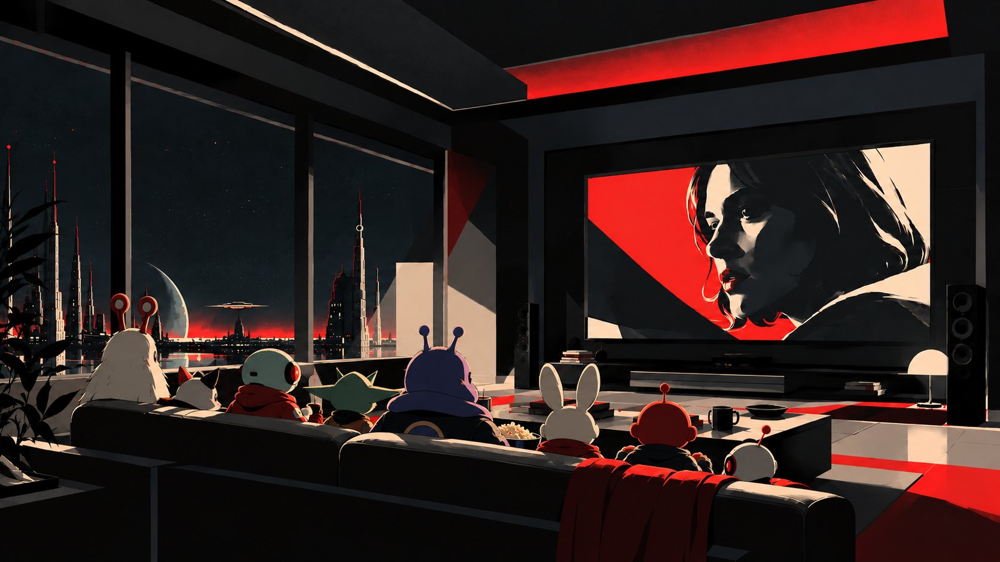
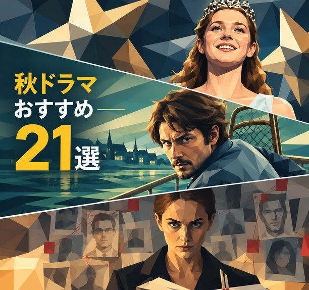
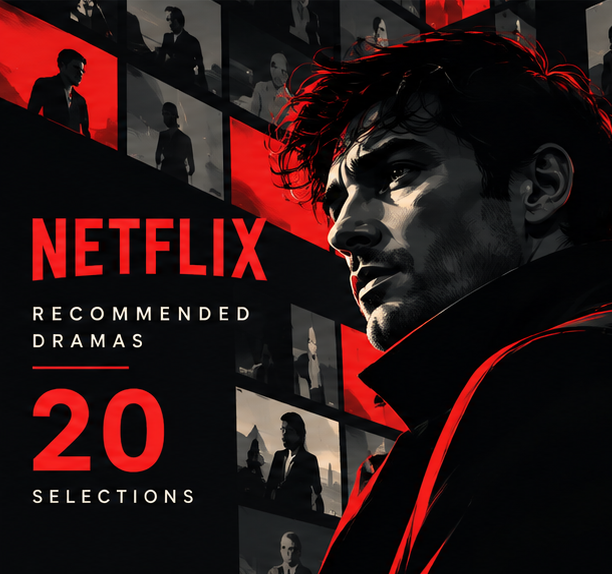

PICK UP
ピックアップ作品
—作品海外レビューと日本配信情報をもとに、いま注目の作品や評価の高い近作、DRAMA RADARが注目する作品などを中心に不定期更新します。
データを読み込んでいます...

新作情報・レビュー・年間BESTを、視聴記録とともに紹介します。

2026年秋に観たい海外ドラマ21選
2026年9月後半〜11月に日本で配信される海外ドラマ・ドキュメンタリーから、DRAMA RADARが注目する21作品をピックアップ。
読む →2026年8〜9月配信｜気になる海外ドラマ7選
Netflix・Apple TV+・Prime Videoから、8〜9月の気になる新作・新シーズンをピックアップ。なかでも『ブラッド・サクリファイス』は今回ぜひ観てほしい一本。
読む →
Netflixで観るべき海外ドラマおすすめ20選【2026年最新版】
サスペンス・SF・犯罪ドラマ・ヒューマンドラマから管理人が厳選した20本。Rotten Tomatoesスコアと管理人コメントつき。
読む →Apple TV+で観るべき海外ドラマおすすめ15選【2026年最新版】
SF・サスペンス・ヒューマンドラマから管理人が厳選した15本。良作率の高いApple TV+の看板作品を一挙紹介。
読む →海外レビューと日本配信情報をもとに、いま注目の作品や評価の高い近作、DRAMA RADARが注目する作品などを中心に不定期更新します。
データを読み込んでいます...
海外ドラマ・映画・ドキュメンタリーを中心に、2017年から視聴した作品を年ごとに記録しています。6年間の視聴記録は計1,138件。各年の視聴一覧と年間BESTをまとめています。